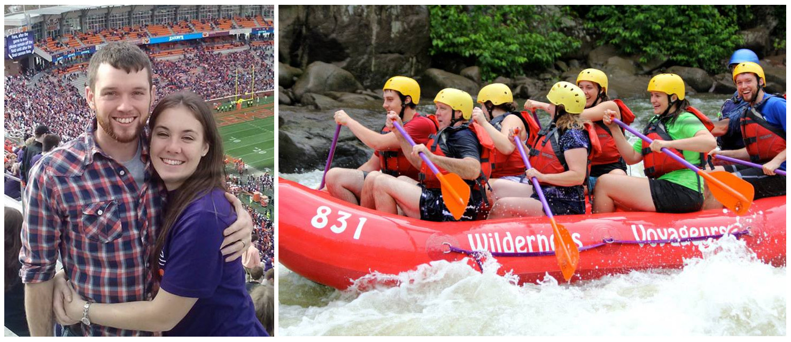

2015
- Attending SIAM-CSE in March.
- Took up skiing as a hobby. So far my wife and I have skied Angel Fire, Santa Fe, and Sipapu.
- Completing the remainder of Ph.D. dissertation for Clemson University remotely from Albuquerque, NM.
2014
- Participated in the IMA Special Workshop Structure-Preserving Discretizations of Partial Differential Equations and the Finite Element Circus.
- Converted to year round student intern.
- Worked for for Sandia National Laboratories as a summer student intern.
- Attended and gave a talk at the SIAM annual meeting in Chicago, IL.
- Completed the Tough Mudder in Atlanta, GA.
- Attended SIAM Southeast Meeting (SIAM-SEAS) 2014 in Melbourne, FL.
- Ran in the Reedy River Run 10k.
- Coordinated a group of graduate students to attend the Virginia Tech student conference.
- Judged for the Focus on Creative Inquiry poster forum at Clemson University.
- Researched error estimates for time-dependent fluid-structure interaction.
2013
- Researched the formulation of fluid-structure interaction in an optimal control setting.
- Summer NREIP participant for the Office of Naval Research in Washington, DC.
- Performed research on fluid-structure interaction.
- Completed Ph.D. qualifying exams.
2012
- Married July 21st, 2012
- Researched under the guidance of Dr. Hyesuk Lee
- Taught two MathSc 207 courses
- Received Master of Science Degree from Clemson University
- Had a paper on Voigt regularization of incompressible MHD and NSE flows published.
2011
- Taught MathSc 102 Calculus courses Fall 2011
2010
- Engaged to be married to Denise Langer
- Graduated with a B.S. Mathematics from Clarion University, PA
- Enrolled in the Ph.D. tract mathematics program at Clemson University, South Carolina.